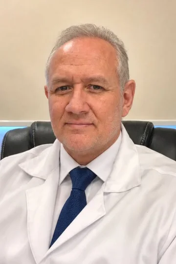

A confirmar Rede e senha serão divulgadas aqui e nos cartazes das salas.
Salas e como chegar a cada uma
Auditório Principal: abertura, Palestra Magna, aulas e sessões patrocinadas.
Mini-Plenário 1: aulas, discussões em formato Heart Team e Simpósio de Hipertensão.
Mini-Plenário 2: Simpósio Multidisciplinar (sábado), Simpósio Acadêmico Multidisciplinar e apresentação dos trabalhos premiados (domingo).
Acadêmicos da LICAR e do CAMUFRO, identificados, orientam o caminho entre as salas.
Temas livres e premiação
Os trabalhos premiados são apresentados no Mini-Plenário 2. Os resumos aprovados serão publicados em suplemento do International Journal of Cardiovascular Sciences (IJCS), da SBC.
Coffee, almoço e coquetel
Coffee break nos intervalos da grade, na área de exposição dos patrocinadores. O coquetel de confraternização é na sexta, após a Palestra Magna.
O almoço de sábado é livre; a grade retorna às 14h.
Estacionamento e chegada
A confirmar Orientações de estacionamento na Assembleia Legislativa.
Endereço: Av. Farquar, 2562, Olaria, Porto Velho. Abrir no Maps →
Precisa de ajuda?
Secretaria do congresso no WhatsApp: (69) 99202-2215 · secretaria.soceronro@gmail.com
Mensagens
Luiz Henrique GaspareloPresidente da SOCERON
Sejam bem-vindos ao XI Congresso Rondoniense de Cardiologia.
Em nome da SOCERON, é uma alegria receber cada colega, da capital e do interior, e os convidados que vieram de outros estados para estes três dias de ciência e convivência.
Esta edição foi construída a muitas mãos e pensada para quem cuida do paciente todos os dias. No Auditório Principal estão as aulas que atualizam a prática. No Mini-Plenário 1, os casos são discutidos em formato Heart Team, com clínico, intervencionista, imagem e cirurgião na mesma mesa. Ao lado do congresso, o 16º Simpósio de Hipertensão Arterial, o 2º Simpósio Multidisciplinar e o Simpósio Acadêmico Multidisciplinar levam a conversa a toda a equipe e a quem está começando.
A cardiologia de Rondônia cresceu, e este encontro mostra isso: produção científica própria, serviços que se consolidam e uma comunidade que se conhece e se apoia. Agradeço à comissão organizadora, aos palestrantes, aos patrocinadores e aos apoiadores, em especial à Assembleia Legislativa, que nos recebe em sua casa.
Aproveitem os debates, perguntem, discordem e conversem nos corredores. É assim que o conhecimento vira cuidado.
Bom congresso a todos.
Rodrigo GallinaPresidente do XI Congresso Rondoniense de Cardiologia
Um encontro para transformar conhecimento em cuidado

É com grande entusiasmo e senso de responsabilidade que damos as boas-vindas ao Congresso Rondoniense de Cardiologia, um dos mais importantes encontros científicos da cardiologia em nosso estado.
Em um cenário de constantes transformações na medicina, a atualização científica deixou de ser apenas uma escolha e tornou-se parte essencial da prática médica. Novas tecnologias, métodos diagnósticos, estratégias terapêuticas e modelos de cuidado estão modificando rapidamente a forma como prevenimos, diagnosticamos e tratamos as doenças cardiovasculares.
É neste contexto que nasce mais uma edição do nosso Congresso: um espaço de atualização, discussão, integração e construção coletiva do futuro da cardiologia em Rondônia.
Rondônia possui uma cardiologia dinâmica, qualificada e em constante crescimento. Nosso Congresso representa também a oportunidade de valorizar essa trajetória, dar visibilidade à produção científica regional e fortalecer a nossa identidade enquanto comunidade cardiológica.
Sejam todos muito bem-vindos ao Congresso Rondoniense de Cardiologia.
Enf. Eduardo Junior de Sousa MouraPresidente do 2º Simpósio Multidisciplinar
Sejam todos muito bem-vindos ao 2º Simpósio Multidisciplinar!
É com grande satisfação que estamos trazendo palestrantes de diferentes áreas da equipe multidisciplinar para compartilhar conhecimentos, experiências e práticas que fazem a diferença na assistência ao paciente crítico cardiológico.
Acreditamos que o cuidado ao paciente cardiológico vai muito além de uma única especialidade. É resultado da integração, da competência e do trabalho conjunto de profissionais que atuam em cada etapa da assistência.
Nossa proposta é valorizar o papel de cada profissional, fortalecer a atuação multiprofissional e promover uma assistência cada vez mais segura, humanizada e qualificada.
Porque cuidar de um paciente crítico cardiológico é uma missão que exige conhecimento, integração e trabalho em equipe!
Dr. João Roberto GemelliPresidente do 16º Simpósio de Hipertensão
Prezadas e prezados colegas,
É com profunda honra que, como presidente do 16º Simpósio de Hipertensão, acolho cada congressista e a comunidade cardiológica de Rondônia.
Chegar à 16ª edição não é apenas uma contagem de encontros. É a memória viva de uma construção realizada ano após ano por colegas que acreditaram no estudo rigoroso, na atualização científica e na prática médica responsável.
Nossa sociedade médica cresceu junto com o estado, fortalecendo vínculos, qualificando equipes e abrindo caminhos para uma assistência cardiovascular cada vez mais abrangente. Ao longo dessa trajetória, nossos congressos e simpósios tornaram-se espaços de integração entre gerações, troca de experiências e compromisso com a excelência.
Hoje reconhecemos avanços concretos na assistência cardiológica em Rondônia, com melhorias de infraestrutura e iniciativas de ampliação dos procedimentos especializados em Porto Velho. São conquistas que refletem o empenho coletivo de profissionais, serviços de saúde e instituições, sem deixar de lado os desafios próprios de nosso território amazônico.
Seguimos com a hipertensão arterial no centro de nossas discussões, atentos às evidências mais recentes e à necessidade de transformar conhecimento em prevenção, diagnóstico e tratamento de qualidade para nossa população.
Que este encontro celebre aqueles que vieram antes, inspire os profissionais que chegam agora e fortaleça os próximos passos da cardiologia rondoniense.
Meu reconhecimento a todos que ajudaram a construir esta história e a cada participante que mantém viva a tradição do nosso simpósio.
Sejam todos muito bem-vindos. Desejo a todos um ótimo evento, marcado por aprendizado, integração e encontros verdadeiramente enriquecedores!